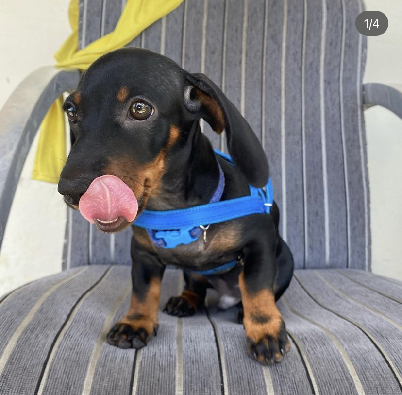

Dezembro de 2022
Minha primeira viagem

A minha primeira viagem para longe foi para uma casa de praia. Eu pensei que nunca chegaria, mas demoramos apenas 2 horas, embora tenha parecido uma eternidade. Tinha um AUmigo comigo, ele era muito grande e velhinho, mas ainda brincamos muito. Foi muito legal, brinquei com várias crianças parece que a energia delas nunca acabavam, brinquei tanto que cansei.